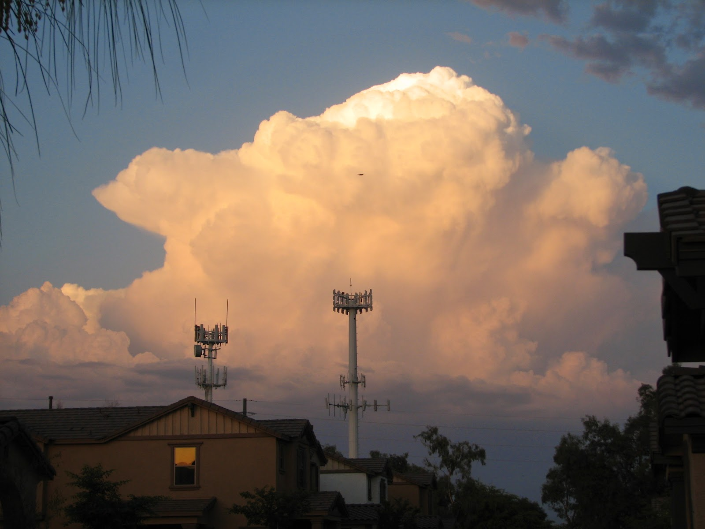

Recovered weblog entry
Fourth of July, 2007 style
Good morning, and welcome to the Fourth of July, a day to be spent reflective upon the foundation of our country, those who sacrificed for it, and of course, to try and blow a small portion of it sky-high.
That is, unless you live in Arizona. I don't believe we've had rainfall in months. That leaves the state absolutely dried up, though that has no meaning on the yearly 'works. Speaking of rainfall, most habitants here are patiently waiting for the annual monsoon storms. I snapped this picture in late May, and had the false hope that we might begin receiving the storms two months early:

Yes, I know the picture would have been immensely better had those cell towers not been smack in the middle, but that's the way it is living in the city. I was quite disappointed to find those towers so close to our little community of houses.
I digress. Ever since I moved to Arizona in 1990, all forms of fireworks have been illegal. Oh, we'll see some tonight, brought to you by some large display by the city of Surprise, but you know it's never the same. There's something about lighting that fuse and getting the heck out of dodge. I take heart knowing that other states have not banned the art of colorful gunpowder just yet; it means that if we ever do move from this state someday, we may just be able to enact our own glorious display of pyrotechnic delight.
As you may have noticed, I did manage to fix this page so that it behaves half-way normal. The clickable calendar has been destroyed as it was too hard to manage. Whenever I moved it, it would blow up the entire table, both where I moved to it, and where I moved it from. Everything else is up to date, and the remaining structure will stay from here on out (or until I get bored again). The only item that might change is the top graphic, as I have always felt the blog page needed its own flair. Agreed?
There have also been further posts over at the Moblah'g, so if you haven't visited in a while, go check it out. I'll always be grateful for the patronage. I have noticed that the pictures I have taken with the mobile phone always lean heavily toward yellow; it makes me pine greatly for a better camera. Not a new phone, mind you...I'd be happy with an auto-focusing 2 or 3 megapixel camera in my current phone. But have I told you of the picture quality of the pictures from the iPhone? Ah, the pictures I could take with that! *back to reality* But that will not happen, as I couldn't do 75% of the other things necessary for the livelihood of the Moblah'g.
Eh, it is what it is, so for the immediate future, the mobile blog will have yellowish pictures.
That's it for me today. I think I've neglected my son for long enough this morning, and I haven't yet eaten breakfast. But I've accomplished what I set out to do, and I can relax for the remainder of the day. See you at the Moblah'g!